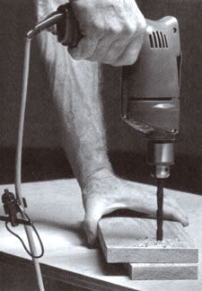
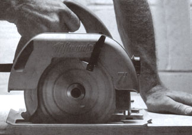

3 Essential Power Tools
The hazards of first time shopping and picking the right tool for the job, including drill, circular saw and router.
August/September 1991
Issue # 127 - August/September 1991
By Ceylon Monroe
One school of thought on carpentry holds that no one should use power tools before mastering hand tools. The logic is hard to dispute: Hand tools demand patience, leaving time to contemplate methods and materials. With a power tool, intimacy is lost; things happen fast, and fine boards can be turned into kindling in no time.
I agree with the hand-tool argument-to a point. Anyone who plans to become a professional should probably observe it. But for the occasional carpenter, logic can be a limitation. An example: Back in my formative days as a wood butcher, I believed strongly in the superiority of hand tools for quality work and would argue beyond the point of absurdity about their efficiency. I often suffered for my pigheadedness.
One summer, my father-in-law-a meticulous craftsman who (horrors) used a circular saw for just about everything and I were re-siding my turn-of-the-century farmhouse. The requisite 6" bevel-lap siding wasn't available, so we were faced with ripping 2" off the proud side of 8"wide boards. Ever ready to prove my point, I wagered that I could slice a 16' board with my Pax 5-1/2-point ripsaw quicker than he could do it with his sidewinder.
To make a painful story short, I won the contest (by the barest of margins) but didn't argue when he suggested we resolve the issue by taking the rest of the boards to the shop for a pass through the table saw. That night, my beer bottle grip was far less tenacious than usual. Mind you, I still love that handsaw, and I can still cut a straighter line with it, but I've learned (if sometimes begrudgingly) to accept the place of power tools.
For the person planning to only occasionally use a power tool, it may be tempting to buy a discount store bargain. Why should an amateur pay the premium for a tool built to last a lifetime in the hands of a professional? Because more than durability separates fine tools from cheap ones. Functional design, power, balance, and other details can help the less skilled do a better job with less effort. It certainly isn't neccessary to buy the best, but do try to afford tools that will become your allies, not your enemies. And exactly what attributes should you look for?
Start with power. Because manufacturers use different systems for describing the power output of their tools, motor ratings are difficult to compare. As a result, it's best to ignore horsepower output ratings and look at an amperage input at full load, as listed on a tool's Underwriters Laboratory required label. The useful power output of a tool is equal to the amperage it draws minus losses to inefficiency. There are differences in efficiency, but they're seldom larger than 10% and are usually much less. In particular, beware of any claim that a tool "develops" a certain amount of horsepower. This sort of advertising copy is based on amperage draw as the tool bogs down; it's not indicative of sustainable output. The listed amperage is the best, if still imperfect, indicator of power.
Bearings may be the most significant sign of actual tool quality. Less expensive tools have sleeve bearings; better tools have roller or even ball bearings. The type of bearing is particularly important on the motor's output side, since this bearing handles the majority of side loads. An electric drill with sleeve bearings, for example, will work OK as long as you use it only to drill (a thrust load). Chuck a rotary grinder bit into it, though, and the plain bearings won't last long under the side load. Tools with roller or ball bearings are also more pleasant to handle, since they run smoother and quieter.
Most portable power tools built in recent years are double-insulated. All electrical conductors and junctions inside the tool have a second, backup layer of insulation to prevent electricity from reaching the case if the machine should short internally. You can recognize a double-insulated tool instantly because it will have a two-prong plug without the round ground prong. Double insulated power tools are highly recommended-for the sake of safety and convenience.
The latest power-tool technological de velopment is electronic motor control: a digital circuit that maintains constant rpm. This is a significant theoretical advantage on a drill, a circular saw, or a router, since it prevents the operator from slowing the tool below a desirable speed by overloading it. Electronic control is hardly essential, however, and a skilled operator has little need for it. Weigh the added convenience against the increased cost and complication.
The first tool to consider is an electric drill. This most practical of all power tools comes in a wide range of motor sizes and in three different common chuck sizes: 1/4", 3/8", and 1/2". For general work, choose one with a 3/8" chuck. The smallest chuck is suitable only for detail work, and the largest for heavy work with large bits.
A 1 /2" drill may eventually become part of your workshop, but it's too clumsy, heavy, and expensive to be your all-around drill. (Don't buy a small drill with a 1/2" chuck expecting a do-all tool; one with a motor smaller than 4.5 amps won't have the power to handle big jobs and will burn out quickly if used that way.) Likewise, though a battery-operated drill makes a very useful second drill, it won't take the place of a workhorse 3/8" plug-in drill.
Unless you plan to do nothing but drill holes in one kind of material with one size of drill bit, buy a drill with a variable speed-control. The system is more complicated than a simple on-off switch-and therefore slightly less reliable-but makes it possible to perform a variety of drilling tasks and even to drive screws.
Don't buy a drill that isn't reversible. You'll want the ability to remove screws, and reverse is the only way short of pliers to remove a badly struck drill bit.
For a starting collection of bits, look for a twist drill set made from high-speed steel (HSS) that covers sizes between 1/32" and 1/4" in 1/32" increments. Twist drills are made to punch holes in metal but will do for almost any material. Then pick up spade bits (for drilling wood) between 1/4" and 1" in 1/8" increments. Spade bits are comparatively crude wood borers, but they're cheap and get the job done.
Mind you, I still love that handsaw, but I've learned to accept the place of power tools.
Variously known as the contractor's saw or by the trade name belonging to the first company to build one, Skilsaw, the circular saw is the mainstay of carpenters. Equipped with the right blade, it will crosscut, rip, saw panels, slice metal, or grind away masonry. Placed upside down in a workbench, it will even make an acceptable substitute for a table saw.
There are more than a half-dozen different blade diameters for circular saws, but the most common is 7-1/4", which gives a cutting depth that's well suited to the lumber commonly found in homes. There are two different types of circular saws: the worm drive and the sidewinder. Worm drive saws have the blade in front of the motor, instead of to the side, and are uncommon except in the hands of framing carpenters. Though they have some advantages over sidewinders, their extra weight, complexity, and cost make them impractical for amateur use.
Mind you, I still love that handsaw, but I've learned to accept the place of power tools.
Look for roller and ball bearings in a saw with a motor rated at least 10 amps for medium duty or 12 to 13 amps for heavy cutting. The larger motor will run another $20 to $30 but may be well worth the cost if you plan to cut wide joists, rafters, or the like. Any 7-1/4" circular saw should have an arbor speed of at least 4,500 rpm to make smooth cuts. You may actually find some of the more powerful saws rated at lower speeds than less powerful ones simply because they slow down less doing their work.
Any quality circular saw should have an ample base plate to make it secure on the work, a lower blade guard that's easy to lift up to start certain difficult cuts, angle and depth adjustments that are secure yet easy to change, and an unobstructed line of sight to the point where the blade contacts the work. (To guide the saw on a line, use this reference point, not the notch on the front of the base plate.) A spindle lock makes it easy to change blades. Other extras might include such safety features as a switch lockout, to prevent accidental start-up while you're carrying the tool, and a brake.
When you buy your saw, get a carbide-tipped blade with 24 to 30 teeth. These are usually called general purpose or combination blades because they give a reasonably smooth crosscut and will handle all but the most difficult rips. Expect to pay $20 to $30 for a good one. Later, if the need arises, you can pick up a panel-cutting blade for plywood, a hollow-ground planer for very smooth crosscuts, or a specialty blade for steel or masonry.
It may sound a bit odd, but another thing to look for in a circular saw is a good cord. Bargain saws typically come with a 6' or 8' wire that makes free movement very difficult if you're plugged into a wall outlet or a multiple-outlet box on an extension cord. It's the sort of frustration that leads to cutting one's own cord, something almost every initiate is sure to do--proving dramatically the virtue of double insulation.
Though the electric drill and circular saw are unarguably the first tools to buy, the third item on the list is a little harder to choose. If your plans include any furniture or an appreciable amount of trim work, a router is probably the right choice. I, however, bought a belt sander before I got my router. Back when I'd yet to realize that the siding on my house would have to be replaced, I stripped the whole house with that sander. Still, I've decided to recommend a router because, when needed, it's just plain indispensable. A belt sander, on the other hand, is merely an awesome labor-saver; maybe you'll make it number four on your list?
Using a selection of different bits, a router can round over, bevel, joint, groove, edge, rabbet, and form a variety of trim profiles. Revolving at 20,000 to 25,000 rpm, the bits give an incredibly smooth cut. As long as the edges are sharp and the tool is handled properly, nothing but finish sanding will be required. Placed upside down in a bench, a router will even do a fair imitation of an ex pensive shaper jointer. There are three com mon collet (chuck) sizes for bit shanks: 1/4", 3/8", and 1/2". Small routers live the 1/4" collet, medium and large ones have the 1/2"-with adapters for 3/8" and 1/4". Thus a 1/2" collet can accept the smaller, less ex pensive bits for light work, but the little ma chines use only the 1/4" shanks.
Most full-time carpenters keep two routers on hand: a small one (1/4" collet with about a 6-amp motor) to do light rounding over and beveling, and a big (1/2" collet) plunge router to handle mortises, dadoes, and other major cuts. That's over $300 worth of routers (at discount) and about that much again in bits-way too much money for a parttimer to spend.
Probably the best compromise is to buy a router with about an 8-amp motor. That's enough ponies to handle anything up to a 1/2" rounding-over bit in one pass, and it's just large enough to use inverted in a router table. At the same time, it's small enough and light enough to be reasonably easy to handle.
A router ought to fit you like a good pair of gloves. The handles should be comfortably spaced, and the on-off switch should be accessible without moving your hands. (However, the switch should be shielded to prevent you from bumping it accidentally.) Except for long, straight cuts, most people prefer two handles of equal size rather than the D-handle arrangement. Check to see how easily the base and motor move up and down to adjust the depth of cut; at the same time, make sure that you can see the bit at various depths. In many operations, it's crucial that you have a clear view of the bit at work to know where to stop, and some routers make this difficult.
Nine-tenths of my routing work is rounding over (sometimes called beading) edges on window, door, and cabinet trim. After going through a trash-canful of under $10, HSS rounding-over bits, I finally bought my first quality carbide bit with a pilot bearing. What a difference! It cuts far bet ter, is less likely to burn the stock, and shows no sign of dulling after a year of use.
Carbide bits cost four times as much, but last far more than four times as long. Now, as each of the HSS bits in my rig dulls, I replace it with a carbide. And if there's a model with a pilot bearing available, I cough up the extra cash.
Handy bits for remodeling include 1/4", 3/8", and 1/2" rounding-over; 1/4", 1/2", and 3/4" straight cut; 1/2" cove; 3/8" rabbet; and 45° bevel. You can economize on this list by buying an arbor (a shaft with a bearing and locknut) and then picking up specialized cutters as you need them. Whether you want to stock them all is mostly a matter of how hard it is for you to get the one you need.
If, like me, you feel like a kid in a candy store each time you go to the hardware store, you'll actually want to drag these purchases out-revel in the choices, massage the tools, and daydream about what they'll enable you to do. Tools can be a source of pleasure unto themselves-not to mention a financially hazardous obsession-arid having the right one is a joyful celebration of power.

Back the work with a piece of scrap to prevent the wood from tearing put when the drill comes through.
|

To follow the line when sawing, be sure to watch the blade, not the notch in front of the base plate.
|
|